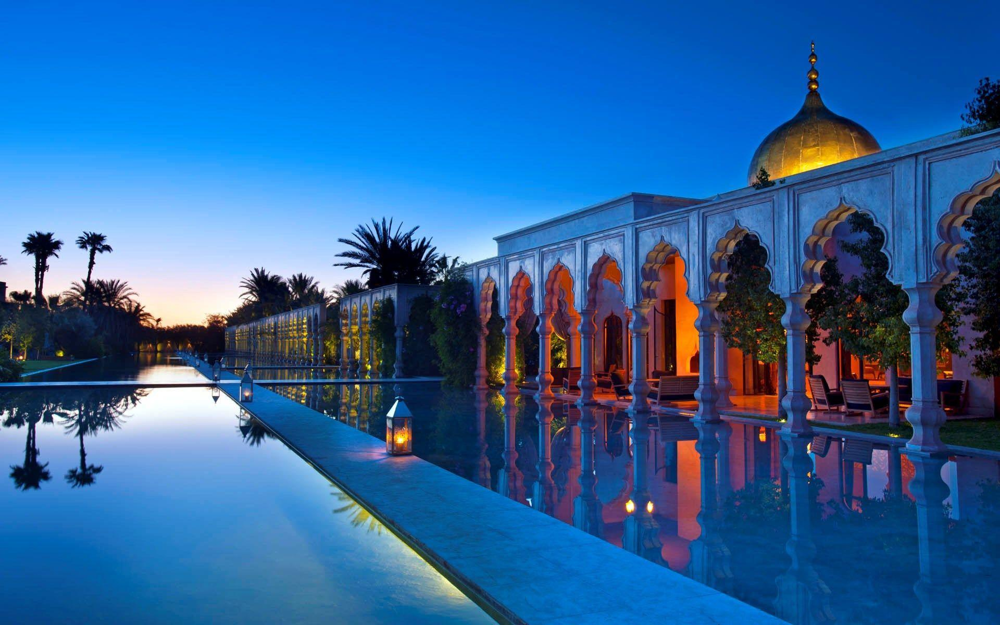
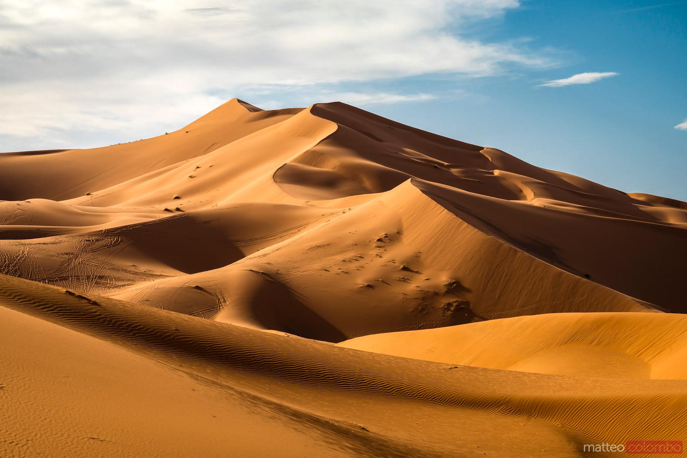

Lieux Incontournables

Marrakech
La ville ocre, entre souks animés et palais majestueux.

Le Désert du Sahara
Bivouacs sous les étoiles et dunes dorées à perte de vue.

Chefchaouen
La perle bleue des montagnes du Rif, havre de paix et de beauté.